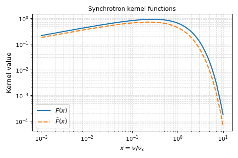
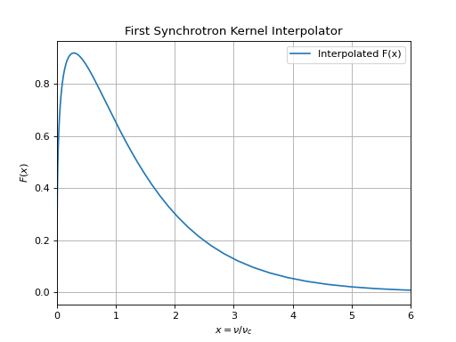

Core Synchrotron Tools#
Hint
See Synchrotron Radiation Theory for a detailed overview of the theory of synchrotron radiation.
The radiation.synchrotron.core module provides the foundational building
blocks for synchrotron radiation calculations in Triceratops. Unlike higher-level
modules, this module does not assume any particular electron distribution,
microphysical closure, or spectral regime. Instead, it exposes the minimal
theoretical ingredients needed to construct synchrotron emission models from
first principles.
Broadly speaking, the tools in this module fall into three categories:
Fundamental synchrotron frequencies (gyrofrequency and critical frequency),
Synchrotron kernel functions, which encode the spectral shape of emission,
Single-electron synchrotron emission spectra.
These tools are intended both for pedagogical use and as low-level components in more sophisticated modeling pipelines.
Frequencies#
Synchrotron emission is governed by a small number of characteristic frequencies associated with the motion of relativistic electrons in a magnetic field.
The Gyrofrequency#
The gyrofrequency (sometimes called the cyclotron frequency) describes the frequency at which a charged particle orbits magnetic field lines. For a relativistic electron of Lorentz factor \(\gamma\) in a magnetic field of strength \(B\), the relativistic gyrofrequency is
Although synchrotron radiation is not emitted primarily at the gyrofrequency, this quantity sets the fundamental frequency scale of the problem. In Triceratops, the gyrofrequency is implemented in both optimized CGS form and a unit-aware public API:
The high level implementation is compute_gyrofrequency(), which
accepts astropy.units.Quantity inputs for the magnetic field:
from triceratops.radiation.synchrotron.core import compute_gyrofrequency
import astropy.units as u
nu_g = compute_gyrofrequency(gamma=100, B=1*u.G)
print(nu_g)
The low-level implementation is _optimized_compute_nu_gyro(), which is
intended for pure CGS evaluation without unit handling overhead:
from triceratops.radiation.synchrotron.core import _optimized_compute_nu_gyro
nu_g = _optimized_compute_nu_gyro(gamma=100, B_cgs=1.0) # B in Gauss
print(nu_g) # nu_g in Hz
The Critical Synchrotron Frequency#
The most important frequency for synchrotron radiation is the critical frequency, \(\nu_c\), which characterizes the peak of the single-electron synchrotron spectrum. It is given by
as derived in Rybicki and Lightman[1]. For a given electron, the majority of its synchrotron power is emitted within roughly an order of magnitude of this frequency.
In Triceratops, this frequency can be computed using
The high level implementation is compute_nu_critical(), which
accepts astropy.units.Quantity inputs for the magnetic field:
from triceratops.radiation.synchrotron.core import compute_nu_critical
import astropy.units as u
nu_c = compute_nu_critical(gamma=100, B=1*u.G)
print(nu_c)
The low-level implementation is _optimized_compute_nu_critical(), which is
intended for pure CGS evaluation without unit handling overhead:
from triceratops.radiation.synchrotron.core import _optimized_compute_nu_critical
nu_c = _optimized_compute_nu_critical(gamma=100, B_cgs=1.0) # B in Gauss
print(nu_c) # nu_c in Hz
Synchrotron Kernels#
The detailed frequency dependence of synchrotron radiation does not reduce to a simple power law at the level of a single electron. Instead, it is encoded in a small number of special functions—known as synchrotron kernels—which arise from integrating the relativistic Liénard–Wiechert fields over the electron’s trajectory [1][2].
The most important of these is the first synchrotron kernel,
where \(K_{5/3}\) is the modified Bessel function of the second kind and
The kernel \(F(x)\) completely determines the shape of the synchrotron spectrum emitted by a single electron, up to an overall normalization depending on the magnetic field strength and pitch angle.
A second kernel,
appears in the decomposition of the emission into polarization components.
Both of these kernels are directly implemented in Triceratops:
first_synchrotron_kernel()for \(F(x)\),second_synchrotron_kernel()for \(G(x)\).
Important
For inference and performance-critical applications, users should avoid
direct evaluation of these kernels. Instead, they should use the provided
interpolation tools described below. Because these kernels directly call the
underlying gamma functions (scipy.special.kv()), direct evaluation is
computationally expensive.
Examples
As an example of a direct kernel evaluation, we can plot the shape of a single-electron power spectrum:
import numpy as np
import matplotlib.pyplot as plt
from triceratops.radiation.synchrotron.core import first_synchrotron_kernel
x = np.logspace(-5, 2, 200)
F_x = first_synchrotron_kernel(x)
plt.plot(x, F_x)
plt.xlim([0,6])
plt.xlabel(r"$x = \nu / \nu_c$")
plt.ylabel(r"$F(x)$")
plt.title("First Synchrotron Kernel")
plt.grid(True)
plt.show()
(Source code, png, hires.png, pdf)
{kind=link}
{kind=link}

Efficient Evaluation of Synchrotron Kernels#
In many use-cases, it is necessary to evaluate the synchrotron kernels very efficiently. For example, for a generic electron distribution, the total synchrotron emission spectrum is given by
which depends directly on \(F(x)\). Because \(F(x)\) requires quadrature over a Bessel function, direct evaluation is prohibitively expensive for repeated use within integrals or likelihood evaluations. To circumvent this, Triceratops provides some options for fast and accurate kernel estimation schemes.
Interpolation Tables#
One option which is available in Triceratops and allow for maximal flexibility on the user end is to pre-compute a table of \(F(x)\) values over a desired range of \(x\) and then use interpolation to evaluate the kernel at arbitrary points. Control over the nature of the interpolation and the number of points in the abscissa permits easy control over the balance of accuracy and speed.
A downside to naive interpolation is that, in the asymptotic regimes beyond the interpolation table, most interpolators will not reproduce the known analytic scalings of the synchrotron kernels. To address this, Triceratops provides a custom interpolator which automatically reverts to the known asymptotic forms outside of the tabulated range.
In the high-level API, tabulation is done via the low-level API and wrapped in a easy-to-use interpolation
function which provides the user with a callable interpolant. The compute_first_kernel_interp() and
compute_second_kernel_interp() functions can be used to create naive interpolators (wrapping
scipy.interpolate.interp1d()), while the get_first_kernel_interpolator() and
get_second_kernel_interpolator() functions provide the custom asymptotic-aware interpolators.
Because unit coercion is not necessary for these kernels, there are not 1-1 high-level equivalents for the low-level API. Instead, the Low-Level API provides access to tabulation functionality in addition to the interpolation functions from the high-level API. The relevant functions are:
_build_first_kernel_tableand_build_second_kernel_tablefor tabulating the kernels.
As an example of this functionality, we can create and plot an asymptotic-aware interpolant for the first synchrotron kernel:
import numpy as np
import matplotlib.pyplot as plt
from triceratops.radiation.synchrotron.core import get_first_kernel_interpolator
# Create the interpolator
F_interp = get_first_kernel_interpolator(x_min=1e-4, x_max=10.0, num_points=500)
# Evaluate the interpolator
x = np.logspace(-5, 2, 200)
F_x = F_interp(x)
plt.plot(x, F_x, label="Interpolated F(x)")
plt.xlim([0,6])
plt.xlabel(r"$x = \nu / \nu_c$")
plt.ylabel(r"$F(x)$")
plt.title("First Synchrotron Kernel Interpolator")
plt.grid(True)
plt.legend()
plt.show()
(Source code, png, hires.png, pdf)
{kind=link}
{kind=link}

Single Electron Spectra#
The synchrotron power spectrum emitted by a single relativistic electron spiraling in a magnetic field is given by
where \(\alpha\) is the pitch angle between the electron’s velocity and the magnetic field, \(\nu_c\) is the critical frequency defined above, and \(F(x)\) is the first synchrotron kernel.
This functionality is implemented in both high-level and low-level APIs:
The high level implementation is compute_single_electron_power(), which
accepts astropy.units.Quantity inputs for the magnetic field and frequency:
from triceratops.radiation.synchrotron.core import compute_single_electron_power
import astropy.units as u
nu = 1e9 * u.Hz # Frequency
gamma = 100 # Electron Lorentz factor
B = 1 * u.G # Magnetic field
alpha = 90 * u.deg # Pitch angle
P_single = compute_single_electron_power(nu=nu, gamma=gamma, B=B, alpha=alpha)
print(P_single)
The function compute_single_electron_power() accepts a kernel_function keyword argument which
allows the user to specify which synchrotron kernel to use. By default, it uses the direct evaluation function
first_synchrotron_kernel(), but users can provide their own interpolants for improved performance.
The low-level implementation is _opt_compute_single_electron_power(), which is
intended for pure CGS evaluation without unit handling overhead:
from triceratops.radiation.synchrotron.core import _opt_compute_single_electron_power, first_synchrotron_kernel
nu_cgs = 1e9 # Frequency in Hz
gamma = 100 # Electron Lorentz factor
B_cgs = 1.0 # Magnetic field in Gauss
sin_alpha = 1.0 # sin(pitch angle), e.g. for 90 degrees
P_single = _opt_compute_single_electron_power(nu=nu_cgs, gamma=gamma, B_cgs=B_cgs, alpha=alpha,
kernel_function=first_synchrotron_kernel)
print(P_single) # Power in erg/s/Hz
A significant difference in this low-level function is the requirement that the user specify explicitly which synchrotron kernel function should be used. This permits the user to provide a custom interpolator or to use the direct evaluation function, or a pre-computed interpolant as described above.
Integrated Synchrotron Spectra#
Given an arbitrary distribution of relativistic electrons, \(N(\gamma)\), the total synchrotron emission spectrum is obtained by integrating the single-electron spectrum over the distribution:
The radiation.synchrotron.core module provides two complementary
numerical strategies for evaluating this expression, depending on how the
electron distribution is specified. For each strategy, Triceratops exposes both
a public, unit-aware API and a low-level, optimized CGS API.
This approach is intended for cases where the electron distribution is already available as a finite grid of Lorentz factors and corresponding number densities. This is the most common scenario in practical modeling and arises naturally in:
time-dependent electron cooling calculations,
particle-in-cell or Monte Carlo post-processing,
tabulated or evolved electron populations.
In this case, the synchrotron spectrum is computed via numerical quadrature over the Lorentz factor grid using trapezoidal integration.
Public API
The public API implements the compute_ME_spectrum_from_dist_grid() function.
This function:
accepts
astropy.units.Quantityinputs,performs unit validation and coercion,
dispatches to the optimized low-level routine internally.
Low-Level API
The low-level API implements the _opt_compute_ME_spectrum_from_dist_grid() function.
The low-level implementation:
operates purely in CGS units,
performs no unit checking or coercion,
assumes
N_gammarepresents \(dN/d\gamma\),uses vectorized NumPy operations and
np.trapzfor efficiency.
Important
The low-level API is intended for internal use and performance-critical applications where units are already known to be consistent. Users implementing custom modeling pipelines may call it directly, but must ensure all inputs are provided in CGS units.
Note
For performance-critical use cases, users should provide an
interpolated synchrotron kernel (e.g. via
get_first_kernel_interpolator()) rather than relying on direct
kernel evaluation.
This approach is intended for cases where the electron distribution is most naturally expressed as a continuous function \(N(\gamma)\). Typical use cases include:
analytic injection models,
exploratory or pedagogical calculations,
prototyping new distribution functions.
In this case, the synchrotron spectrum is computed using adaptive quadrature over the Lorentz factor.
Public API
The public API implements the compute_ME_spectrum_from_dist_function() function.
This function:
accepts unit-aware frequency and magnetic field inputs,
wraps an adaptive quadrature routine,
forwards integration control parameters to
scipy.integrate.quad().
Low-Level API
The low-level API implements the _opt_compute_ME_spectrum_from_dist_function() function.
The low-level implementation:
operates purely in CGS units,
performs adaptive quadrature directly over \(\gamma\),
assumes the supplied callable returns \(dN/d\gamma\) in CGS units,
is optimized for clarity and correctness rather than maximum speed.
Warning
Because this approach performs an adaptive integral for each observing frequency, it is generally slower than the grid-based method and is not recommended for large-scale inference or repeated likelihood evaluations.
Note
As with the grid-based API, the use of interpolated synchrotron kernels is strongly recommended. Direct evaluation of \(F(x)\) inside the quadrature loop can lead to prohibitively slow performance.
Choice of API#
The grid-based and function-based APIs are mathematically equivalent, but are designed to support distinct modeling paradigms. As a general guideline:
Use grid-based integration when the electron distribution is already discretized or evolves in time.
Use function-based integration when the distribution is analytic and inexpensive to evaluate.
Use the low-level APIs when building performance-critical pipelines or implementing new synchrotron modeling layers within Triceratops.
Higher-level synchrotron modeling tools (e.g. those implementing equipartition, cooling, or absorption processes) internally dispatch to these low-level functions after performing unit validation and parameter bookkeeping.
Both APIs ultimately reduce to the same physical expression for \(P(\nu)\) and differ only in their numerical realization.